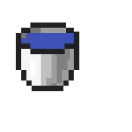

Some mobs in Minecraft can be passive or harmful. One example of a mob in minecraft is the Enderman. It is a mob that is only passive if you don’t look directly in the eyes. Other mobs like the pig don’t harm you.
When you fall many blocks down, you will deal fall damage. In order to stop the damage from coming, you have to place something below you before you hit the ground. One of the things you can use is a water bucket. There are other things you can use to save yourself such as a boat or even a block of hay.
When you’re trying to defeat the enderdragon, you have to go to the end. This place is very different from the overworld since it has a 2 mobs in the world. There are towers and on top there’s end crystals which you have to destroy. You have to destroy these end crystals first before klling the ender dragon and beating the game.